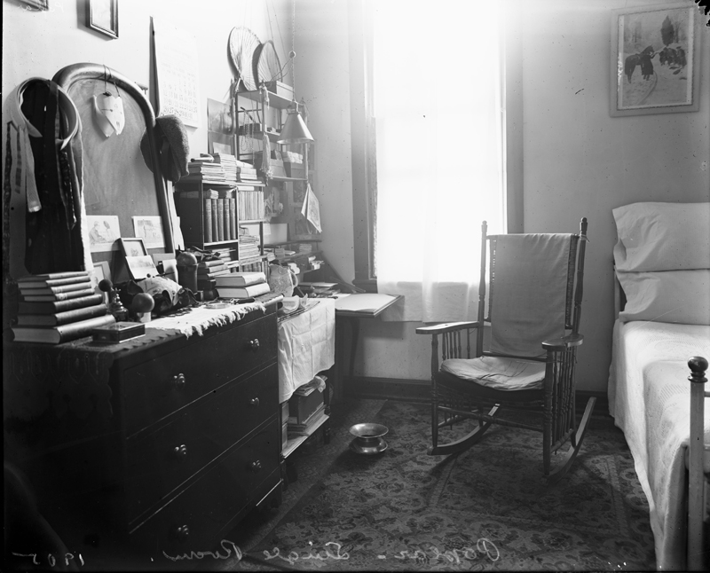

I saw the days of the year stretching ahead like a series of bright, white boxes, and separating one box from another was sleep, like a black shade. Only for me, the long perspective of shades that set off one box from the next had suddenly snapped up, and I could see day after day after day glaring ahead of me like a white, broad, infinitely desolate avenue.
Sylvia Plath · The Bell Jar · p. 163